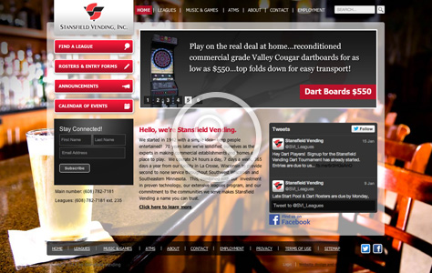
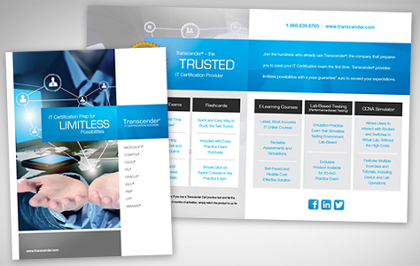

<!doctype html>
<html>
  <head>
    <link href='http://fonts.googleapis.com/css?family=Raleway:600,300' rel='stylesheet' type='text/css'>
    <link rel="stylesheet" type="text/css" href="styles/stylesheet.css" />
  	<link rel="stylesheet" type="text/css" href="styles/topNav.css" />
  <title>Liz Brungraber | Home</title>
  </head>

  <body>

  <div id="mainWrap">

  <div id="logo">
  
  </div>

  <div id="topNav">
		<a class="navPurple" href="about.html"><span>ABOUT</span></a>
		<a class="navGreen" href="portfolio.html"><span>PORTFOLIO</span></a>

  </div>

<div id="content">
  <p>Liz  is a Madison, Wisconsin based  designer and jill-of-all-trades. She  started in the business with a No. 2 pencil and  evolved from there. She has over 10 years experience with print and display graphics, web design and development, flash animation and development, and video editing and motion graphics.</p>
  <h1><span class="blue">featured </span>work</h1>
  <div class="divider"></div>


  <div> <!--*PROJECT START*-->

  <a href="http://www.stansfieldvending.com/" target="_blank"></a>
  <div class="captionGreen"><span class="bold">Client:</span> Stansfield Vending. <span class="bold">Project:</span> Website redesign. </div>
  <!--*CLIENT/PROJECT END*-->
  <div class="captionSumm"><span class="bold">Role:</span> Design (Web &amp; UI).<span class="bold"><br>
    Summary:</span> Used bold colors,  bright imagery, and transparent backgrounds to bring games and music environments to life. Created a detailed, technical spec sheet to help guide back-end development.<br>
<span class="bold">Stakeholders:</span> Client,  Marketing Director, DNN Template Developer.  </div>
  <!--*SUMMARY END*-->
  </div> <!--*PROJECT END*-->

  <div class="margin"> <!--*PROJECT START*-->

  
  <div class="captionPurple"><span class="bold">Client:</span> Transcender. <span class="bold">Project:</span> 4-Page Print Brochure. </div>
  <!--*CLIENT/PROJECT END*-->
  <div class="captionSumm"><span class="bold">Role:</span> Design &amp; Layout.<span class="bold"><br>
    Summary:</span> Updated the brochure with more compelling imagery and used  negative space in the layout to make it easier to differentiate between products and services.<br>
<span class="bold">Stakeholders: </span>Marketing Specialist, Product Line Owner.  </div>
  <!--*SUMMARY END*-->
  </div><!--*PROJECT END*-->

</div>

<div class="footer">&copy; 2017 Liz Brungraber. All Rights Reserved.</div>
  </div>
  
  </body>
</html>
